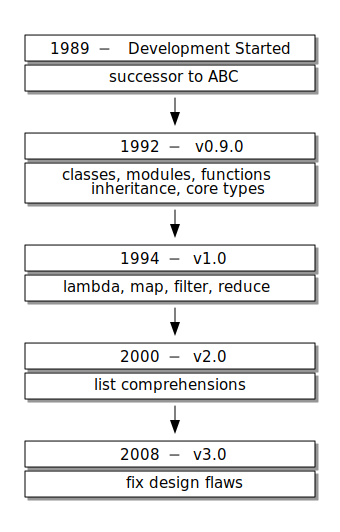
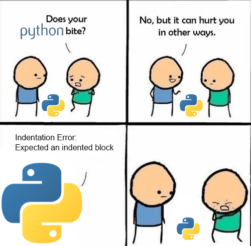
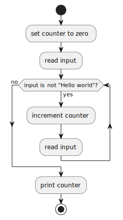

Python 3.11.5 (tags/v3.11.5:cce6ba9, Aug 24 2023, 14:38:34) [MSC v.1936 64 bit (AMD64)] on win32
Type "help", "copyright", "credits" or "license" for more information.
>>> import this
The Zen of Python, by Tim Peters
Beautiful is better than ugly.
Explicit is better than implicit.
Simple is better than complex.
Complex is better than complicated.
Flat is better than nested.
Sparse is better than dense.
Readability counts.
Special cases aren't special enough to break the rules.
Although practicality beats purity.
Errors should never pass silently.
Unless explicitly silenced.
In the face of ambiguity, refuse the temptation to guess.
There should be one-- and preferably only one --obvious way to do it.
Although that way may not be obvious at first unless you're Dutch.
Now is better than never.
Although never is often better than *right* now.
If the implementation is hard to explain, it's a bad idea.
If the implementation is easy to explain, it may be a good idea.
Namespaces are one honking great idea -- let's do more of those!Python

Purpose
High-level, General-purpose Programming Language
Emphasizes readability
Multi-paradigm: procedural, object-oriented, and functional
Includes comprehensive libraries
The Zen of Python
Usage
Currently the second most popular programming language
Over 50% of hiring managers seeking candidates who know the language
Used in backend development, data science, app development, and IT ops
Often recommended for beginners, but used by almost everyone
History

Designed by Guido van Rossum
Borrowed from many different languages
v3.0 broke compatibility
2.7 EOL was 2020
Installing Python
| Download and install Python now. This is your opportunity to troubleshoot installation issues as a class. After this slide, it’s assumed that you have the latest version of Python installed. |
print()
print("Hello world")Outputs a message or object to the standard out
This program would print out
Hello world(with a newline)
input()
user_input = input()Reads input from the standard input device
Results are typically stored in a variable
Here we create a variable with the assignment operator,
=This program would store whatever the user types (up to a newline) in
user_input
Interactive Mode
If you just run the Python launcher,
pyfrom a terminal it will put you in interactive modeYou can tell you’re in interactive mode by the prompt:
>>>
Open a terminal, run py, and get to the interactive Python prompt. Write a program that prints "Hello world". Write a program that accepts user input and stores it in a variable called user_input. |
Indentation
Python uses indentation (white space: tabs, spaces) to break code into blocks
If you’re not careful/consistent it will not be able to interpret your program
The best way to avoid problems is to use an editor meant for editing code, such as VSCode

Syntax
Most programs are too complex to type in at the interactive prompt
It’s more common to create
.pyfiles containing Python codeThese files can be run with the
pylauncherA typical file has one statement per line
Everything that follows a
#on a line is ignored by Python#is used for commentsIndentation must be consistent
A colon,
:, is used to indicate that the following indented block applies to that statement
Variables
A variable is a place store a value
Variables can change (they are mutable)
Python does not require you to declare variables
Python has conventions for variable naming
Types
Python has some basic types,
str,int,float,list,dict, etc.Variables technically types but they can be coerced via duck typing
You can find a variable’s type with the
type()function and you can cast variables to a certain type:int(my_variable)Python also supports type hints which can be enforced with third party tools
Conditionals
user_input = input()
if user_input == "Hello world": (1) (2)
print("User input is Hello world") (3)
else:
print("User input IS NOT Hello world")| 1 | What does the == do here? Why not =? |
| 2 | What does the : do here? |
| 3 | Why is this section indented? |
Use interactive Python to find out what type input() returns. |
Loops
i = 0 (1)
while i < 10: (2)
print("i is now ", i) (3)
i += 1 (4)| 1 | What type is i? |
| 2 | Why is there a colon here? |
| 3 | What happens if you pass a variable to print()? |
| 4 | What does the += operator do? |
Problem Solving in Steps
Break big problems into little ones
Make little problems into steps
Follow steps to reach a solution
Keep this in mind before you start coding
Example 1
Print the numbers from one to five
Set a variable to one
Print that variable
Increment that variable
Keep doing that until we reach five
Example 1 (continued)
counter = 1
while counter < 6: (1)
print(counter)
counter += 1| 1 | Why 6? I thought we were counting to 5. |
Note
Python has many ways to do this
As you learn what’s available you may solve this a different way
Example 2
Read user input and print Good job if the input is Hello world
| Write down the steps you would use to solve this problem. |
Example 2 (continued)
user_input = input()
if user_input == "Hello world":
print("Good job") (1)| 1 | Why no else? |
Example 3
Count how many tries it takes the user to type in Hello world and print out that number and quit when they get it right.
| Write down how you would solve this problem. |
Example 3 (continued)

Example 3 (continued)
tries = 0
user_input = input() (1)
while user_input != "Hello world":
tries += 1
user_input = input() (1)
print(tries)| 1 | Why do we have input() twice in our code? |
Installing VSCode
VSCode is a cross-platform, free (as in cost), integrated development environment (IDE)
It helps us manage files, run terminal commands, and create Python code all in one place
| Download and install VSCode now. This is your chance to solve installation issues as a class. From this slide on, it’s assumed that you have VSCode installed and working. |
Writing a Python Script in VSCode
Files can be made with File→New File. VSCode will ask you to enter the file name so it knows what syntax highlighting to use.
You can open a new terminal with Terminal→New Terminal. By default it will start at the bottom of the screen.
Make a file called <FirstName>_<LastName>.py (where <FirstName> is your first name and <LastName> is your last name) and put the code from Example 3 in there. Run it from the terminal by entering py <FirstName>_<LastName>.py. |